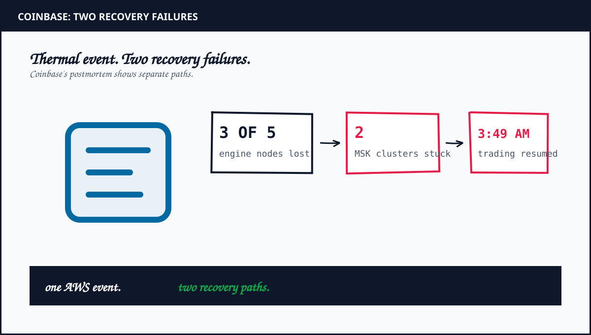
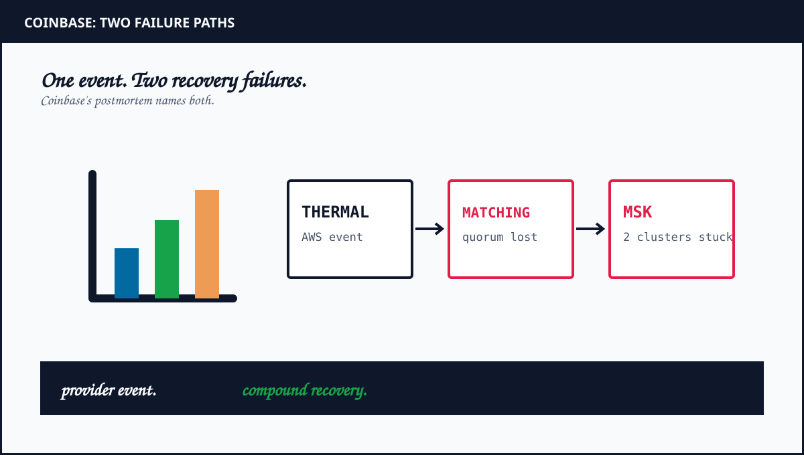

1. The provider event and the recovery timeline
Coinbase says multiple chiller units failed at 7:20 PM ET on May 7 in one AWS us-east-1 data hall. The resulting thermal shutdown took EC2 instances and EBS volumes offline. At 7:48 PM ET, nearly all trading on Coinbase had halted.
At 9:29 PM ET, AWS terminated instances in Coinbase's placement group. Three of five matching-engine nodes went down, removing quorum. Coinbase restored quorum at 12:06 AM ET, reopened markets in stages and resumed full trading at 3:49 AM ET. The consumer-facing site and app were fully recovered by 9:53 AM ET. Event-streaming backlog clearance continued until 2:00 PM ET.
2. Failure one: matching-engine quorum
Coinbase says it lacked automated failover to another Availability Zone for its matching engine. Recovery required an emergency code change to remove a startup assumption, a new node group outside the affected placement group and a careful sequence to restore a three-of-five quorum.
This was an application architecture and recovery-path issue. A node count or placement diagram alone does not demonstrate that a replacement group can be created, discovered and admitted quickly enough. Coinbase says it is improving warm cross-zone standby design and scheduling production failover exercises.

3. Failure two: AWS MSK control-plane defect
Coinbase reports that a defect in the AWS MSK control plane prevented automatic partition-leader reelection. Two clusters became stuck in a “healing” state and producers could not write. The resulting dependency chain blocked the fee service, then quoting. Coinbase also reports effects on parts of its ledger pipeline, payments and data pipelines.
One of Coinbase's Kafka clusters used two Availability Zones, which increased its blast radius and recovery time. Coinbase says the MSK control-plane defect affected two-zone and three-zone Kafka clusters alike. The primary account does not say all clusters shared one topology, nor does it publish a single broker count, replication factor or min-ISR setting for the fleet.
Engineers began manual partition reassignment at 3:00 AM ET. Priority-zero and priority-one topics were fully available by 9:30 AM ET. Remaining topics cleared by 2:00 PM ET. The distinction matters: restoring the matching engine did not instantly restore every event consumer.
4. What the incident teaches about managed dependencies
Managed infrastructure transfers operational work to a provider. It does not remove the need to understand provider control-plane failure states. An application may be multi-zone in steady state while still having no tested recovery path for a stuck cluster, unavailable partition leaders or producers that cannot make progress.
Map the dependencies behind a user-visible transaction. Coinbase's account shows a Kafka write failure reaching the fee service, then quoting, then other downstream pipelines. Draw that path for your own system. Identify which dependencies block the customer response and which can buffer work safely.
Then rehearse separate failure modes: loss of one compute zone, matching-engine quorum loss, broker replacement, leader-election stall, producer backpressure and delayed consumer recovery. Record the recovery owner, signal, rollback path and data-consistency check for each. Use production-safe tests and your own telemetry. The source does not publish Coinbase's match rate, per-minute financial loss or a comparable infrastructure invoice, so this article does not invent those figures.
5. The verdict: rehearse both control planes
Coinbase's postmortem describes a compound incident, not proof that adding a third Availability Zone guarantees failover. Matching-engine recovery required a new quorum path. Kafka recovery required AWS MSK control-plane recovery plus manual partition movement. The two-zone Kafka configuration increased impact, while the defect also affected three-zone clusters.
For an architecture review, ask for a timed matching-engine failover exercise and a separate managed-Kafka stuck-healing drill. Verify producer behavior, downstream queue limits, consumer catch-up and customer recovery independently. Compare with the consumer-side cascade in Kafka Rebalance Storm and the broader Event Streaming course.
Frequently Asked Questions
What caused the Coinbase outage in May 2026?
Coinbase says an AWS thermal event took infrastructure in one data hall offline. Its matching engine lost quorum, while an AWS MSK control-plane defect left two Kafka clusters stuck in a healing state.
Why did the AWS MSK issue delay recovery?
Coinbase reports that producers could not write to two clusters. That blocked the fee service and quoting, with effects on adjacent systems. Engineers manually reassigned partitions during recovery.
Did all of Coinbase's Kafka clusters use three Availability Zones?
No. Coinbase says one Kafka cluster used two Availability Zones. The MSK control-plane defect affected both two-zone and three-zone clusters.
What should teams test after this incident?
Test matching-engine quorum recovery separately from Kafka leader recovery. Exercise stuck-cluster runbooks, producer behavior, downstream dependencies and backlog clearance using your own workload telemetry.
Sources and Method
Incident timeline, architecture details and recovery actions follow Coinbase's first-party June 1 postmortem. The May 13 report from The Stack provides contemporaneous independent coverage. Recommendations are engineering analysis. This revision removes topology, timing and loss assumptions not established by those sources.